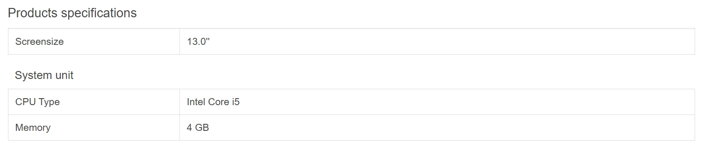
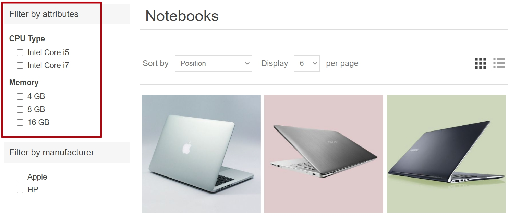
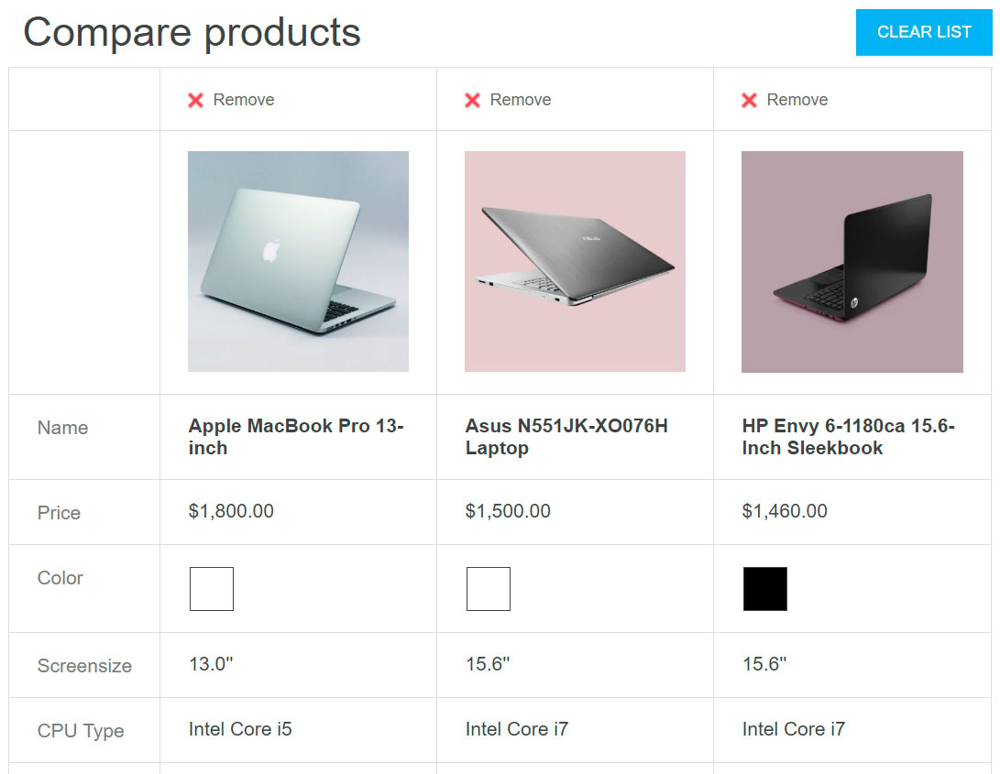
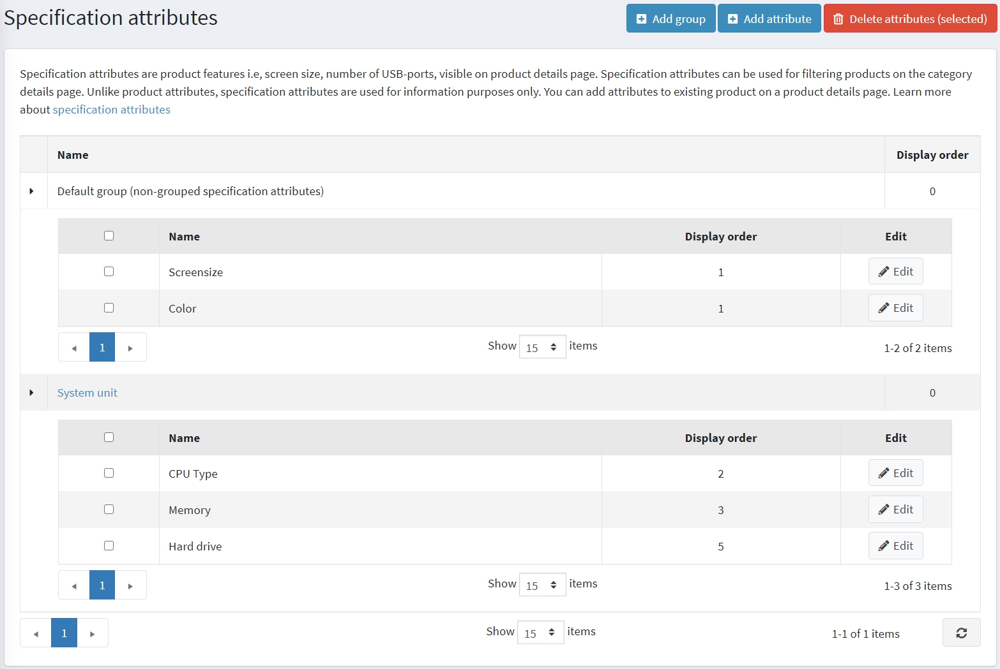
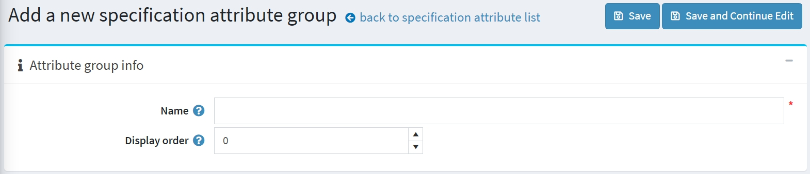
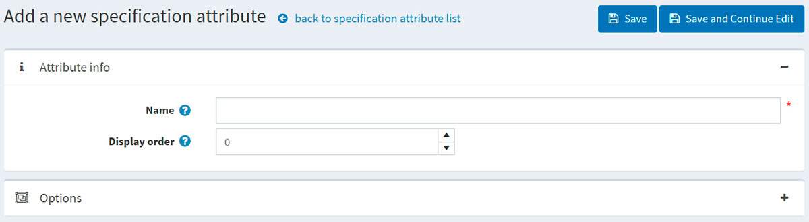
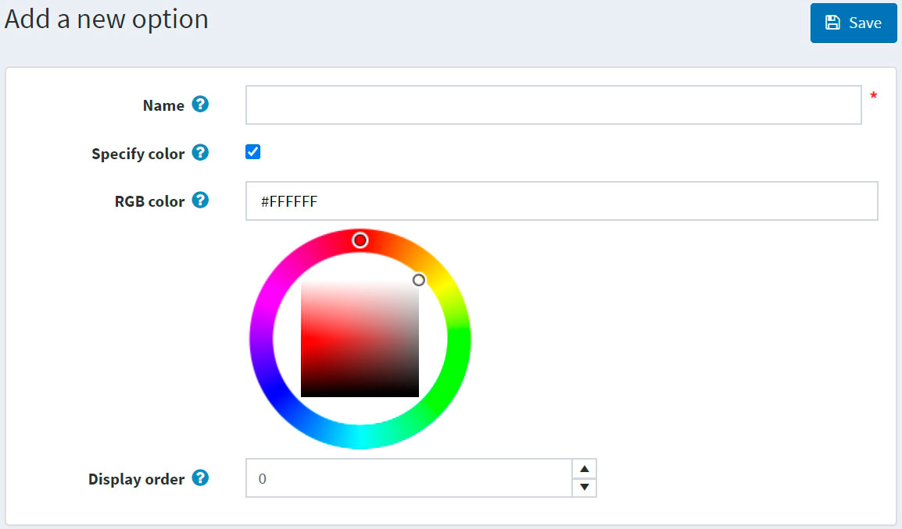
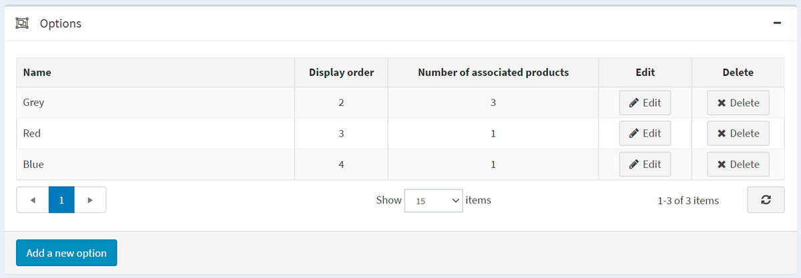
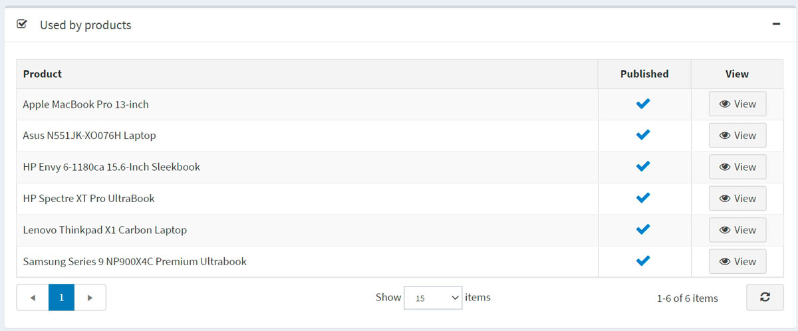

規格屬性
規格屬性與 商品屬性 類似；然而，它們僅用於提供資訊（顯示於商品詳細頁面），以及在分類詳細頁面上用來篩選商品。它們不會定義商品價格，也無法用於庫存追蹤。
範例
假設您正在經營一家線上電腦商店。什麼有助於顧客做出購買決策？
提供顧客關於您商品全面且具描述性的資訊。儘管您已經填寫了某台電腦的簡短描述與完整描述，仍應讓顧客能夠查看反映商品最重要細節的規格特性：

當您在 為商品新增規格屬性 時，若勾選了 顯示於商品頁面 (Show on product page) 欄位，此表格即可顯示在商品詳細資訊頁面上。
允許您的顧客使用篩選功能來搜尋電腦。假設我們可以在您的商店中依據 CPU 類型和記憶體進行搜尋，那麼分類頁面看起來會像這樣：

當 為商品新增規格屬性 時，若勾選 允許篩選 (Allow filtering) 欄位，即可針對特定商品啟用此屬性的篩選功能。
在您的商店中加入「商品比較」功能。此功能同樣使用規格屬性。對於您的電腦商店來說，「商品比較」頁面看起來會像這樣：

若要啟用「商品比較」功能，請前往 設定 → 設定 → 目錄設定。在 商品比較 (Compare products) 面板中，勾選 啟用「商品比較」 ('Compare products' enabled) 核取方塊。
下一節將說明如何建立規格屬性。請注意，在建立規格屬性清單後，您需要將這些規格屬性逐一新增至各項商品中。請參閱 新增商品 - 規格屬性 章節，了解如何將規格屬性新增至商品。
建立規格屬性群組
Note
所有未歸屬於任何群組的規格屬性都會顯示在 預設群組 (未分組的規格屬性) 中。
若要檢視並編輯規格屬性及其群組列表，請前往 目錄 → 屬性 → 規格屬性。

點擊 新增群組 以新增群組。此時將顯示 新增規格屬性群組 視窗，如下所示：

在 屬性群組資訊 面板中，輸入：
- 規格屬性群組的 名稱。
- 顯示順序 數字。
然後儲存變更。
建立規格屬性
Note
預設情況下，nopCommerce 並未預先建立任何規格屬性。
若要檢視並編輯規格屬性列表，請前往 目錄 → 屬性 → 規格屬性。
在此頁面上，您可以透過勾選規格屬性並點擊 刪除 (所選) 按鈕來刪除它們。
點擊 新增屬性 來新增一個屬性。隨後將顯示 新增規格屬性 視窗，如下所示：

在 屬性資訊 面板中，輸入以下內容：
- 規格屬性的 名稱。
- 顯示順序 數字。
點擊 儲存並繼續編輯 以進入 選項 編輯面板。
新增選項
在「選項」面板中點擊 新增選項 按鈕以建立新的規格屬性選項。接著會顯示 新增選項 視窗，如下所示：

定義以下選項設定：
- 名稱：規格屬性選項的名稱。
- 勾選 指定顏色 核取方塊，以選擇用來取代選項文字名稱的顏色（它將顯示為一個「顏色方塊」）。
- 選擇要顯示給顧客的 RGB 顏色。
- 顯示順序：排序編號。
點擊 儲存 以儲存選項詳細資料。
下圖顯示了已經新增的選項：

商品使用狀況
若您已將規格屬性套用至商品，您可以在「商品使用狀況」面板中查看這些商品的列表：
